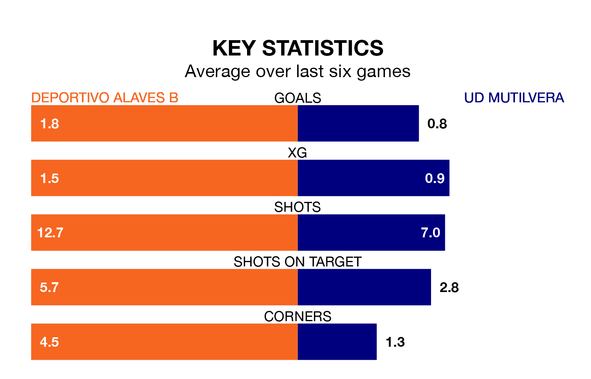

Deportivo Alaves B are heavy favourites to keep all three points at home in Sunday's early kick-off against UD Mutilvera.
Deportivo Alaves B, who sit sixth in the Segunda División RFEF Group 2 with 28 games played, are priced at 1.4 to seal victory at Ciudad Deportiva José Luis Compañón.
Sitting six places and 13 points behind them in the table, Mutilvera are 7.0 to win with *Betting Company*, while the draw is at 3.9.
With 50 goals in 28 games so far this season, Deportivo Alaves B are the league's third-highest scorers with 1.8 goals per game. But they are conceding more than average too, letting in 33 goals at a rate of 1.2 per game.
Mutilvera, meanwhile, are below average scorers, with 0.7 goals per game, compared to a league average of 1.1. They have conceded 1.2 goals per game.
The hosts are in disappointing form in the Segunda División RFEF Group 2, with one win and two draws from their last six games.
With two wins and a draw over that period, the away side's form is slightly better – they have taken seven points from 18, compared to Deportivo Alaves B's five.
In the last five years, Deportivo Alaves B and Mutilvera have played each other on five occasions. They won two each, and they drew once.
On average, Deportivo Alaves B scored 0.8 goals and Mutilvera 0.8 in those matches.
Their last meeting was on November 18, when Deportivo Alaves B won 3-1 away.
Deportivo Alaves B's last match was on Sunday, a 2-1 loss against Real Zaragoza B.
Mutilvera beat CD Valle Egüés 1-0 last time out, also on Sunday, with Martin Pedroarena Espinal on the scoresheet.
Updated: 10:31 (UTC), 31/03/24